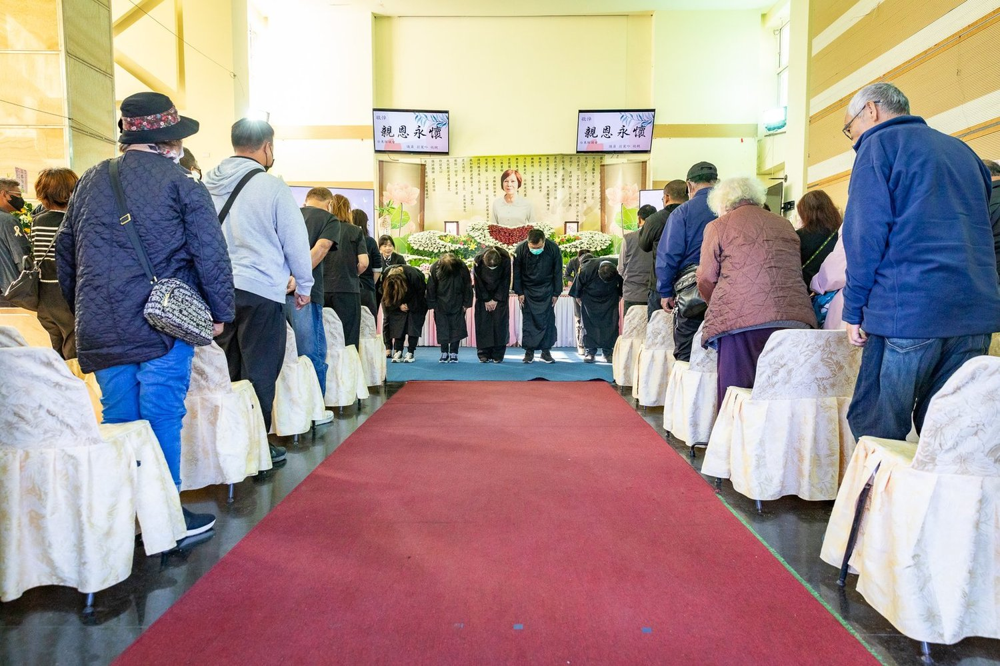
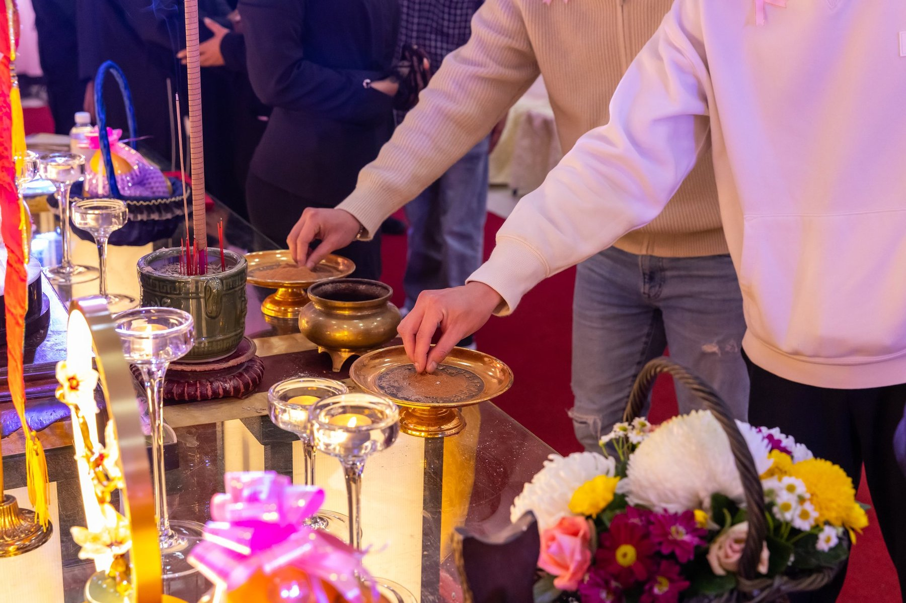
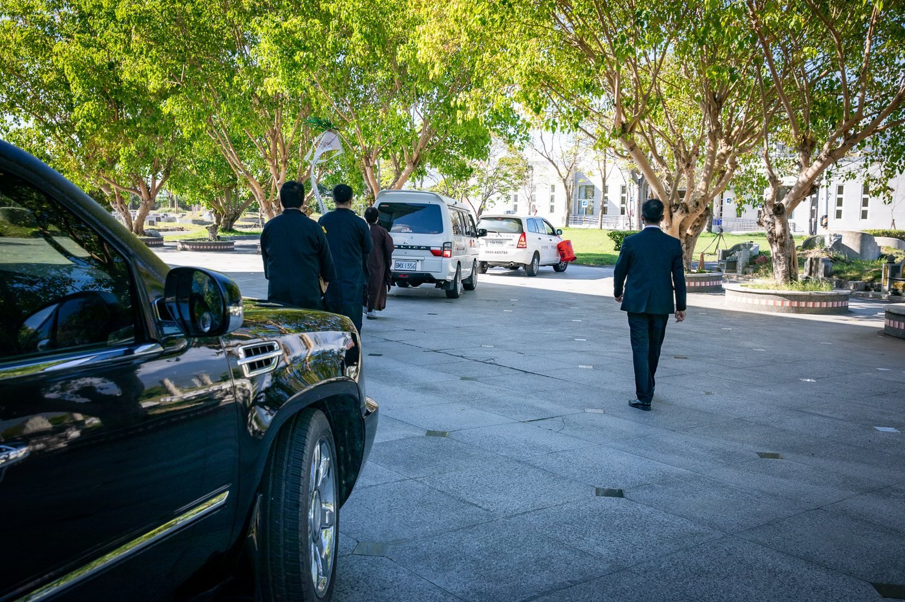
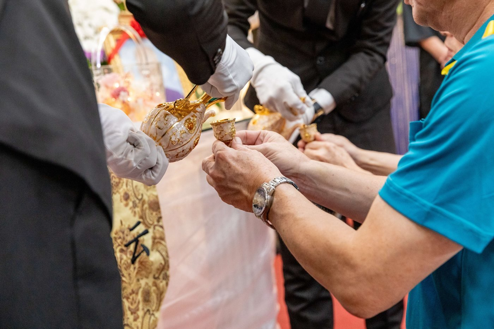

儀式全貌
交代空間、流程與親友的位置，讓照片保有時間與場景的脈絡。
一場告別裡，有許多不會寫在流程表上的時刻：扶住家人的手、遠道而來的身影，以及家人替逝者準備的熟悉物品。
每一張照片，都先尊重家人的選擇。
以下影像皆經家屬同意後呈現。為保護隱私，部分作品不出現正面容貌，也不公開逝者姓名、儀式日期與家庭資訊。
一場告別的情感，不只在哭泣裡，也在準備、等待、扶持與默默站在身邊的每一個動作裡。




完整的紀錄不只是一連串好看的照片，而是讓空間、人物、細節與情感彼此連在一起，保留那一天的脈絡。
交代空間、流程與親友的位置，讓照片保有時間與場景的脈絡。
互相攙扶、整理衣服、遞上一杯水，這些照顧往往比合照更接近真實。
遺照、手寫卡片、花禮與熟悉物品，都在訴說逝者曾經如何生活。
親友抵達、工作人員準備，以及結束後的安靜，讓這一天成為完整記憶。